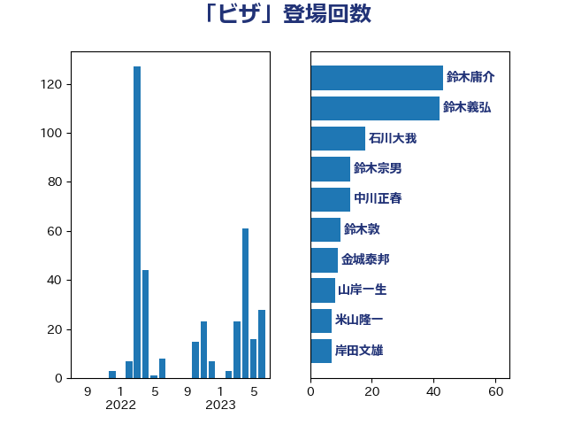

単語「ビザ」

| 鈴木庸介 | 立憲民主党 | 43 回 |
| 鈴木義弘 | 国民民主党 | 42 回 |
| 石川大我 | 立憲民主党 | 18 回 |
| 鈴木宗男 | 日本維新の会 | 13 回 |
| 中川正春 | 立憲民主党 | 13 回 |
| 鈴木敦 | 国民民主党 | 10 回 |
| 金城泰邦 | 公明党 | 9 回 |
| 山岸一生 | 立憲民主党 | 8 回 |
| 米山隆一 | 立憲民主党 | 7 回 |
| 岸田文雄 | 自由民主党 | 7 回 |
| 山田勝彦 | 立憲民主党 | 6 回 |
| 寺田学 | 立憲民主党 | 6 回 |
| 道下大樹 | 立憲民主党 | 5 回 |
| 自見はなこ | 自由民主党 | 5 回 |
| 谷合正明 | 公明党 | 4 回 |
| 西銘恒三郎 | 自由民主党 | 4 回 |
| 福島みずほ | 社会民主党 | 4 回 |
| 福山哲郎 | 立憲民主党 | 4 回 |
| 川合孝典 | 国民民主党 | 4 回 |
| 山添拓 | 日本共産党 | 4 回 |
| 小熊慎司 | 立憲民主党 | 4 回 |
| 守島正 | 日本維新の会 | 4 回 |
| 青柳仁士 | 日本維新の会 | 3 回 |
| 長友慎治 | 国民民主党 | 3 回 |
| 藤岡隆雄 | 立憲民主党 | 3 回 |
| 片山大介 | 日本維新の会 | 3 回 |
| 浮島智子 | 公明党 | 3 回 |
| 浜口誠 | 国民民主党 | 3 回 |
| 大塚耕平 | 国民民主党 | 3 回 |
| 野田佳彦 | 立憲民主党 | 2 回 |
| 紙智子 | 日本共産党 | 2 回 |
| 稲津久 | 公明党 | 2 回 |
| 林芳正 | 自由民主党 | 2 回 |
| 松原仁 | 立憲民主党 | 2 回 |
| 杉本和巳 | 日本維新の会 | 2 回 |
| 杉尾秀哉 | 立憲民主党 | 2 回 |
| 本田太郎 | 自由民主党 | 2 回 |
| 徳永久志 | 無所属 | 2 回 |
| 岡田直樹 | 自由民主党 | 2 回 |
| 小野泰輔 | 日本維新の会 | 2 回 |
| 吉田はるみ | 立憲民主党 | 2 回 |
| 古川禎久 | 自由民主党 | 2 回 |
| 伊藤俊輔 | 立憲民主党 | 2 回 |
| 仁比聡平 | 日本共産党 | 2 回 |
| 高橋光男 | 公明党 | 1 回 |
| 高木宏壽 | 自由民主党 | 1 回 |
| 青山大人 | 立憲民主党 | 1 回 |
| 阿部弘樹 | 日本維新の会 | 1 回 |
| 阿部司 | 日本維新の会 | 1 回 |
| 鈴木貴子 | 自由民主党 | 1 回 |
| 遠藤良太 | 日本維新の会 | 1 回 |
| 赤嶺政賢 | 日本共産党 | 1 回 |
| 萩生田光一 | 自由民主党 | 1 回 |
| 舟山康江 | 国民民主党 | 1 回 |
| 篠原孝 | 立憲民主党 | 1 回 |
| 神田潤一 | 自由民主党 | 1 回 |
| 磯崎仁彦 | 自由民主党 | 1 回 |
| 石橋通宏 | 立憲民主党 | 1 回 |
| 石垣のりこ | 立憲民主党 | 1 回 |
| 石井啓一 | 公明党 | 1 回 |
| 田中昌史 | 自由民主党 | 1 回 |
| 玄葉光一郎 | 立憲民主党 | 1 回 |
| 漆間譲司 | 日本維新の会 | 1 回 |
| 清水貴之 | 日本維新の会 | 1 回 |
| 松木けんこう | 立憲民主党 | 1 回 |
| 東徹 | 日本維新の会 | 1 回 |
| 本村伸子 | 日本共産党 | 1 回 |
| 日下正喜 | 公明党 | 1 回 |
| 山谷えり子 | 自由民主党 | 1 回 |
| 山下雄平 | 自由民主党 | 1 回 |
| 太栄志 | 立憲民主党 | 1 回 |
| 塩村あやか | 立憲民主党 | 1 回 |
| 堀場幸子 | 日本維新の会 | 1 回 |
| 勝部賢志 | 立憲民主党 | 1 回 |
| 加藤勝信 | 自由民主党 | 1 回 |
| 伊藤孝恵 | 国民民主党 | 1 回 |
| 伊東良孝 | 自由民主党 | 1 回 |
| 中谷真一 | 自由民主党 | 1 回 |
| 上田清司 | 国民民主党 | 1 回 |
| 上川陽子 | 自由民主党 | 1 回 |